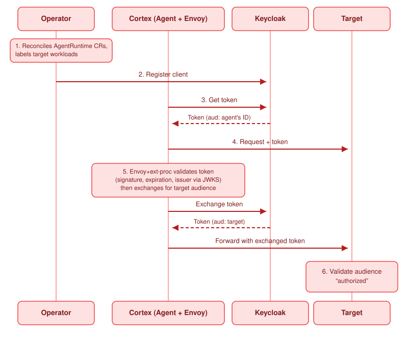

Security
AuthBridge
The identity and access layer of Cortex.
AuthBridge is the identity and access control part of Cortex. It makes each call from an agent authenticated and correctly limited. The agent does no work for this result.
Two plugins do the work. Sentinel enables both by default.
| Plugin | Direction | Function |
|---|---|---|
jwt-validation |
Inbound | Validates the token of the caller. It checks the signature, the issuer and, when you configure it, the audience. It returns the status 401 for an invalid token. |
token-exchange |
Outbound | Exchanges the token of the agent for a token that is valid only for the target, as RFC 8693 describes. |
What the operator injects#
When the operator adds a workload to the platform, a webhook adds three containers to the pod.
| Container | Function |
|---|---|
authbridge-proxy |
An Envoy proxy and a Go processor. It runs the inbound chain and the outbound chain. |
spiffe-helper |
Keeps the identity documents of the workload current. |
| Client registration | Registers the workload with Keycloak at start-up. |
The operator does not change your agent container.
The path of one request#

Operator Agent pod Keycloak Target
│ │ │ │
│ 1. add workload + label │ │ │
│ 2. register OAuth client ──┼────────────────────────────► │ │
│ │ │ │
│ ┌────────┴────────┐ 3. get token │ │
│ │ agent │────────────────────►│ │
│ │ │◄────────────────────│ │
│ └────────┬────────┘ aud: agent │ │
│ │ │ │
│ ┌────────┴────────┐ 4. request + token │ │
│ │ authbridge-proxy│ │ │
│ │ 5. validate, │────────────────────►│ │
│ │ then exchange│◄───────────────────│ │
│ │ │ aud: target │ │
│ └────────┬────────┘─────────────────────┼─────────────────►│
│ │ │ 6. validate aud │
- The operator reads the
AgentRuntimeresource, adds a label to the workload and starts the injection of the sidecars. - The operator registers the workload as an OAuth client in Keycloak.
- The agent gets a token.
- The agent sends a request.
- The proxy validates the token that arrived. It checks the signature, the expiry time and the issuer. It returns the status 401 for an invalid token. It then exchanges the token for a token whose audience is the target.
- The target validates that the audience names the target.
For the diagram of each stage, see Authentication flows.
Client registration#
You do not create a Keycloak client. The operator does these four steps:
- It reads each
AgentRuntimeresource and adds the labelsentinel.io/type: agentorsentinel.io/type: toolto the workload. - It reads the administrator credentials from the
keycloak-admin-secretSecret in its own namespace, which issentinel-system. - It uses the SPIFFE identity of the workload as the identifier of the client.
- It registers the client and writes the credentials to a Secret in the namespace of the workload.
The administrator credentials stay in the namespace of the operator. The namespace of an agent never holds them. This separation is the reason to do the registration centrally.
In the console, this registration happens when you select Secure with AuthBridge during a deployment. There is no container to add and no file to configure.
Examine the configuration of one agent#
To read the active chains, in execution order, with the configuration of each plugin:
sentinel agents authbridge get orders
sentinel agents authbridge get orders --json
To replace them:
sentinel agents authbridge set orders --policy-file ./authbridge.yaml
The command sends the file as text/plain and without a change. Your comments and your key order
therefore remain, and the server validates the file. Add --wait to wait until the change is active.
Note
The --wait option detects a change. It therefore cannot confirm a configuration that is already
active. In that case the command reaches its time limit and exits with an error. This result is correct
behaviour, and not a failure.
Run AuthBridge without Kubernetes#
The same program runs on your computer. This method is the fastest way to see the chain operate:
sentinel authbridge exec --config ./authbridge.yaml -- claude "explain this repo"
See Quickstart on a laptop and Install the cluster CLI.
The Keycloak endpoints#
Use these addresses for a script or for diagnosis on a Kind installation:
POST http://keycloak.keycloak.svc.cluster.local:8080/realms/sentinel/protocol/openid-connect/token
GET http://keycloak.keycloak.svc.cluster.local:8080/realms/sentinel/protocol/openid-connect/userinfo
POST http://keycloak.keycloak.svc.cluster.local:8080/realms/sentinel/protocol/openid-connect/token/introspect
The administrator interface is at http://keycloak.localtest.me:8080/admin/sentinel/console/. To get
the credentials, run ./.github/scripts/local-setup/show-services.sh.
Related pages#
- Identity and trust explains the reason for this design.
- Authentication modes
- Authentication flows
- Plugin catalogue
- Identity in the event path covers the eventing path. Neither its events nor EventBridge's own HTTP API passes through AuthBridge.